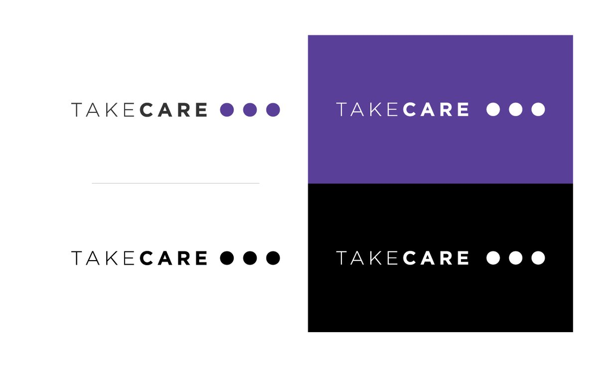
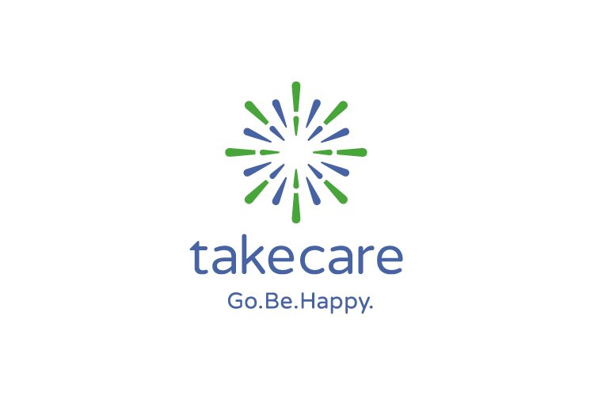
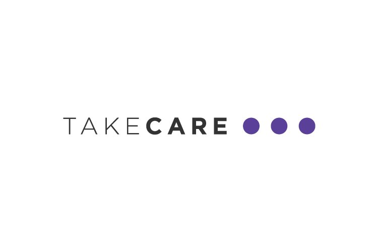
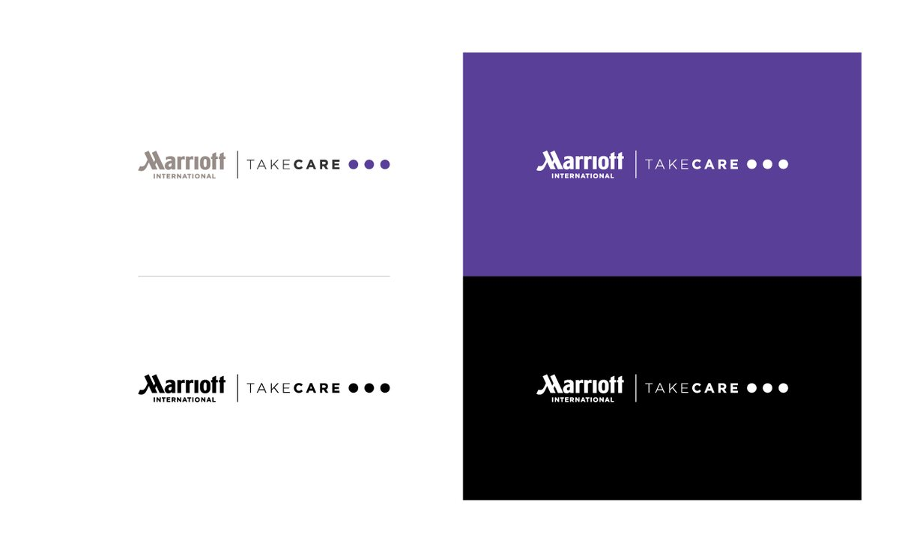
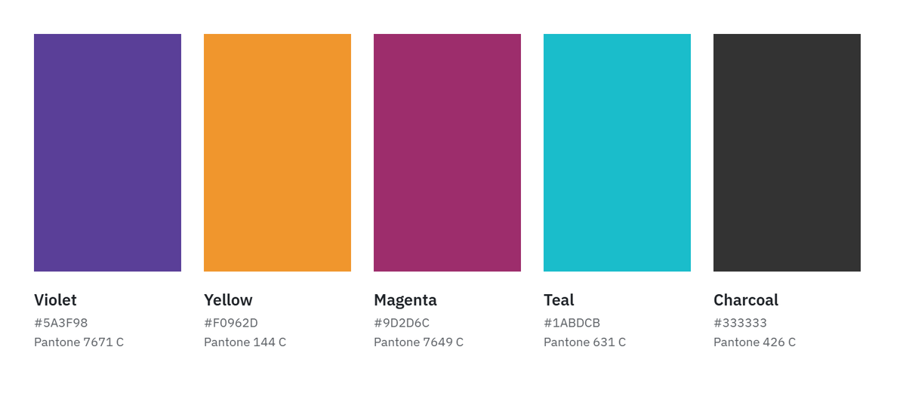
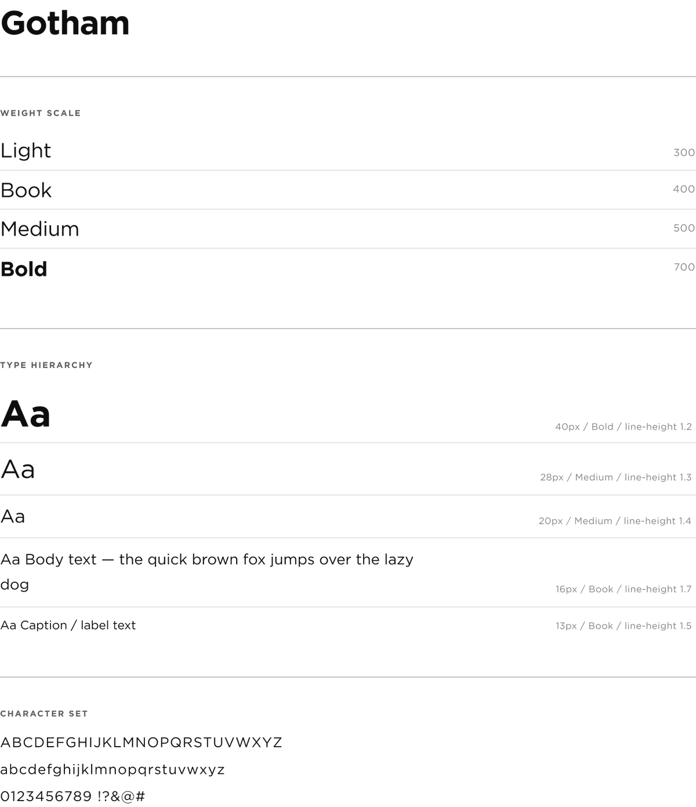
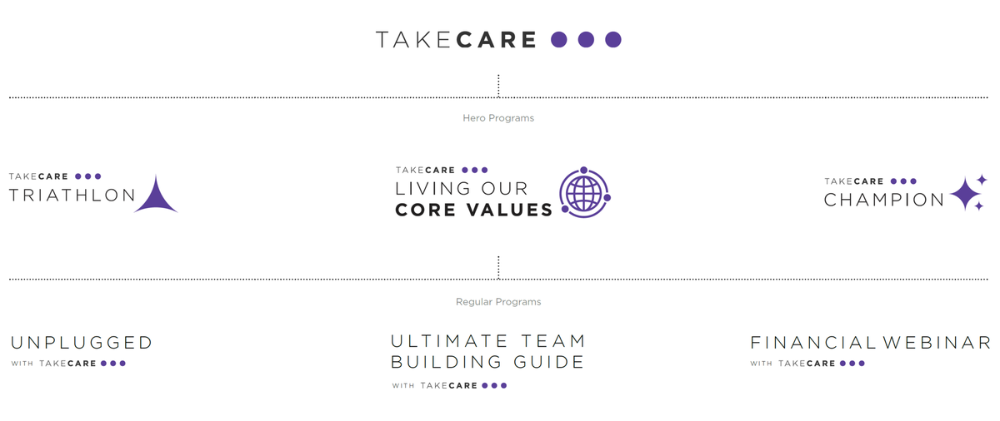
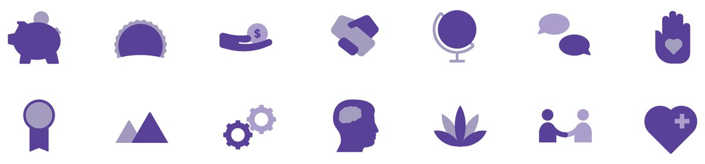

TakeCare
TakeCare is Marriott International's employee health and wellness brand, and engagement was slipping as its workforce grew younger and more global. Working with the agency Perphic, I helped lead a full rebrand: logo, visual identity, photography direction and a brand system for every program under it. Marriott then brought the team back for more internal branding work.

The mark
The old logo, a green and blue starburst with the tagline “Go.Be.Happy.”, read as corporate. The new identity trades that for a lifestyle brand's warmth, putting the weight on “Care.” Its three dots stand for TakeCare's three pillars, Me, You+Me and We, and read as an ellipsis: more to come. Lockups work on their own and alongside the Marriott International wordmark, horizontally and stacked.
Before

After


Color and type
A deep violet leads the palette, chosen for optimism and forward momentum, with yellow, magenta and teal for range and charcoal for text. Gotham carries the type, from light headlines to bold callouts.


One system, many programs
TakeCare isn't one campaign; it's an umbrella over many programs. The system extends to two tiers of sub-brands: Hero Programs that run year after year, like Triathlon and Living Our Core Values, and Regular Programs for recurring events, like Unplugged. Each inherits TakeCare's language while keeping its own identity, so a new program can launch without a new brand.

Imagery
Photography mixes stock and associate images to reflect Marriott's global workforce, art-directed to stay warm and uncluttered.
Brand book and templates
A brand book, digital templates, an icon set and a curated image library let Marriott's teams make new materials without starting from scratch.
